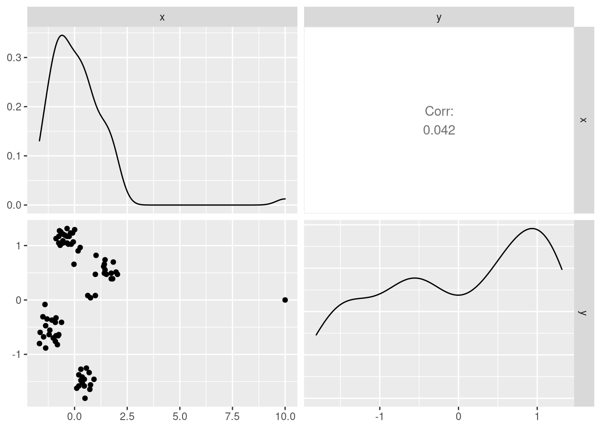
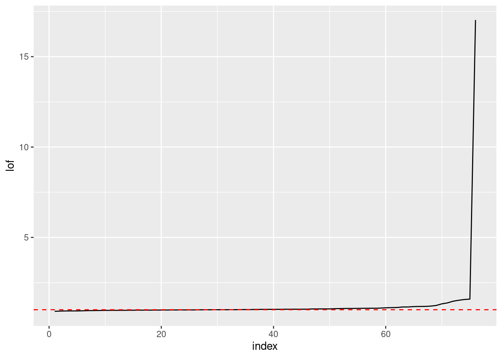
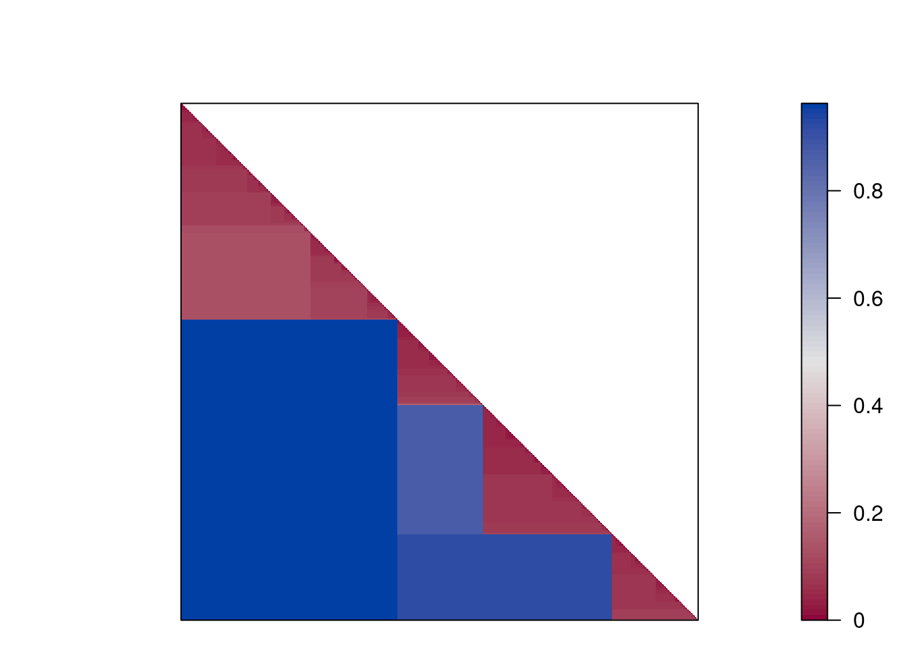
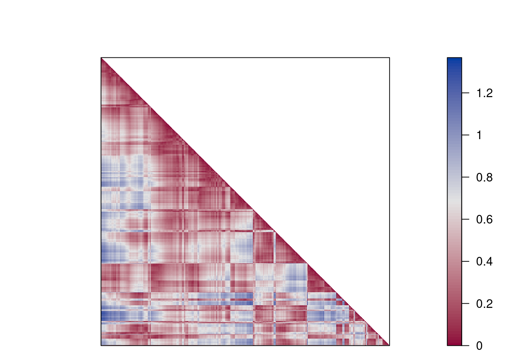

- Preface
- 1 Introduction
- 2 Data
- 3 Classification: Basic Concepts and Techniques
- 4 Classification: Alternative Techniques
- 5 Association Analysis: Basic Concepts and Algorithms
- 6 Association Analysis: Advanced Concepts
- 7 Clustering Analysis
- References
7.5 Advanced Data Preparation for Clustering
7.5.1 Outlier Removal
Most clustering algorithms perform complete assignment (i.e., all data points need to be assigned to a cluster). Outliers will affect the clustering. It is useful to identify outliers and remove strong outliers prior to clustering. A density based method to identify outlier is LOF (Local Outlier Factor). It is related to dbscan and compares the density around a point with the densities around its neighbors (you have to specify the neighborhood size \(k\)). The LOF value for a regular data point is 1. The larger the LOF value gets, the more likely the point is an outlier.
library(dbscan)Add a clear outlier to the scaled Ruspini dataset that is 10 standard deviations above the average for the x axis.
ruspini_scaled_outlier <- ruspini_scaled %>% add_case(x=10,y=0)7.5.1.1 Visual inspection of the data
Outliers can be identified using summary statistics, histograms, scatterplots (pairs plots), and boxplots, etc. We use here a pairs plot (the diagonal contains smoothed histograms). The outlier is visible as the single separate point in the scatter plot and as the long tail of the smoothed histogram for x (we would expect most observations to fall in the range [-3,3] in normalized data).
library("GGally")
ggpairs(ruspini_scaled_outlier)
The outlier is a problem for k-means
km <- kmeans(ruspini_scaled_outlier, centers = 4, nstart = 10)
ruspini_scaled_outlier_km <- ruspini_scaled_outlier%>%
add_column(cluster = factor(km$cluster))
centroids <- as_tibble(km$centers, rownames = "cluster")
ggplot(ruspini_scaled_outlier_km, aes(x = x, y = y, color = cluster)) + geom_point() +
geom_point(data = centroids, aes(x = x, y = y, color = cluster), shape = 3, size = 10)
This problem can be fixed by increasing the number of clusters and removing small clusters in a post-processing step or by identifying and removing outliers before clustering.
7.5.1.2 Local Outlier Factor (LOF)
The Local Outlier Factor is related to concepts of DBSCAN can help to identify potential outliers. Calculate the LOF (I choose a neighborhood size of 10 for density estimation),
lof <- lof(ruspini_scaled_outlier, k = 10)## Warning in lof(ruspini_scaled_outlier, k = 10): lof: k
## is now deprecated. use minPts = 11 instead .lof## [1] 0.978 1.044 0.926 1.024 1.022 0.966 1.154
## [8] 1.071 1.124 1.058 1.008 0.933 1.000 1.074
## [15] 1.008 0.987 1.184 0.989 0.984 1.080 0.911
## [22] 1.019 1.524 0.979 1.045 0.958 1.022 0.934
## [29] 0.979 1.470 0.964 0.988 0.973 1.236 1.082
## [36] 1.326 1.566 1.018 0.998 1.029 1.378 1.107
## [43] 0.952 1.083 1.091 1.029 1.181 1.009 1.031
## [50] 1.030 1.002 1.201 1.001 1.071 0.968 0.954
## [57] 1.046 0.970 1.066 1.045 0.989 0.966 1.028
## [64] 0.991 1.152 0.942 0.977 1.000 0.984 0.998
## [71] 1.174 0.996 1.116 0.934 1.588 17.027ggplot(ruspini_scaled_outlier %>% add_column(lof = lof), aes(x, y, color = lof)) +
geom_point() + scale_color_gradient(low = "gray", high = "red")
Plot the points sorted by increasing LOF and look for a knee.
ggplot(tibble(index = seq_len(length(lof)), lof = sort(lof)), aes(index, lof)) +
geom_line() +
geom_hline(yintercept = 1, color = "red", linetype = 2)
Choose a threshold above 1.
ggplot(ruspini_scaled_outlier %>% add_column(outlier = lof >= 2), aes(x, y, color = outlier)) +
geom_point()
## Analyze the found outliers (they might be interesting data points) and then cluster the data without them.
ruspini_scaled_clean <- ruspini_scaled_outlier %>% filter(lof < 2)
km <- kmeans(ruspini_scaled_clean, centers = 4, nstart = 10)
ruspini_scaled_clean_km <- ruspini_scaled_clean%>%
add_column(cluster = factor(km$cluster))
centroids <- as_tibble(km$centers, rownames = "cluster")
ggplot(ruspini_scaled_clean_km, aes(x = x, y = y, color = cluster)) + geom_point() +
geom_point(data = centroids, aes(x = x, y = y, color = cluster), shape = 3, size = 10)
There are many other outlier removal strategies available. See, e.g., package outliers.
7.5.2 Clustering Tendency
Most clustering algorithms will always produce a clustering, even if the data does not contain a cluster structure. It is typically good to check cluster tendency before attempting to cluster the data.
We use again the smiley data.
library(mlbench)
shapes <- mlbench.smiley(n = 500, sd1 = 0.1, sd2 = 0.05)$x
colnames(shapes) <- c("x", "y")
shapes <- as_tibble(shapes)7.5.2.1 Scatter plots
The first step is visual inspection using scatter plots.
ggplot(shapes, aes(x = x, y = y)) + geom_point()
Cluster tendency is typically indicated by several separated point clouds. Often an appropriate number of clusters can also be visually obtained by counting the number of point clouds. We see four clusters, but the mouth is not convex/spherical and thus will pose a problems to algorithms like k-means.
If the data has more than two features then you can use a pairs plot (scatterplot matrix) or look at a scatterplot of the first two principal components using PCA. #### Visual Analysis for Cluster Tendency Assessment (VAT)
VAT reorders the objects to show potential clustering tendency as a block structure (dark blocks along the main diagonal). We scale the data before using Euclidean distance.
library(seriation)
d_shapes <- dist(scale(shapes))
VAT(d_shapes, col = bluered(100))
iVAT uses the largest distances for all possible paths between two objects instead of the direct distances to make the block structure better visible.
iVAT(d_shapes, col = bluered(100))
7.5.2.2 Hopkins statistic
factoextra can also create a VAT plot and calculate the Hopkins statistic to assess clustering tendency. For the Hopkins statistic, a sample of size \(n\) is drawn from the data and then compares the nearest neighbor distribution with a simulated dataset drawn from a random uniform distribution (see detailed explanation). A values >.5 indicates usually a clustering tendency.
get_clust_tendency(shapes, n = 10)## $hopkins_stat
## [1] 0.907
##
## $plot
Both plots show a strong cluster structure with 4 clusters.
7.5.2.3 Data Without Clustering Tendency
data_random <- tibble(x = runif(500), y = runif(500))
ggplot(data_random, aes(x, y)) + geom_point()
No point clouds are visible, just noise.
d_random <- dist(data_random)
VAT(d_random, col = bluered(100))
iVAT(d_random, col = bluered(100))
get_clust_tendency(data_random, n = 10, graph = FALSE)## $hopkins_stat
## [1] 0.464
##
## $plot
## NULLThere is very little clustering structure visible indicating low clustering tendency and clustering should not be performed on this data. However, k-means can be used to partition the data into \(k\) regions of roughly equivalent size. This can be used as a data-driven discretization of the space.
7.5.2.4 k-means on Data Without Clustering Tendency
What happens if we perform k-means on data that has no inherent clustering structure?
km <- kmeans(data_random, centers = 4)
random_clustered<- data_random %>% add_column(cluster = factor(km$cluster))
ggplot(random_clustered, aes(x = x, y = y, color = cluster)) + geom_point()
k-means discretizes the space into similarly sized regions.